classical 与 masked：完整批次识别与逐帧对照
20260403_2000pure：classical 与 masked 识别结果
处理完成：两方法各 267 张，总计 534 次单帧识别，尺寸 201×1024。
输入与算法：
保留原始 NPY；统一加 1161.0 后四舍五入到 uint16 PNG。无缩放、无裁零、无逐图归一化，量化误差至多 0.5 原始单位。
复用现有 classical 和 masked 算法、已有 best.pt；未重新训练。
检测参数：sigma=1, background_sigma=10, threshold_sigma=4, min_distance=4, radius=3, max_ions=5000。
使用全图模式 region.mode="off"，noise_reference="raw"。原 512×512 专用 ROI 不适用于本数据。
config_used.yaml 仅将原配置中被 YAML 1.1 解析成布尔值的 off 写成字符串 "off"；算法参数数值未调整。
候选数统计（不是独立确认的真实离子数）：
classical：均值 2116.10，中位数 2117，范围 2081–2137，总体标准差 8.90，总候选 564998。
单帧平均 0.654 秒，总计 174.53 秒（原 CLI 计时含定位/恢复与导出，不含初次模型加载）。
masked：均值 2090.88，中位数 2093，范围 2058–2116，总体标准差 10.87，总候选 558266。
单帧平均 0.962 秒，总计 256.99 秒（原 CLI 计时含定位/恢复与导出，不含初次模型加载）。
逐帧 masked − classical 候选数差：平均 -25.21，范围 -58–15。
两方法在 2.0 像素内一对一配对：524363 对。
分别覆盖 classical 候选的 92.81% 和 masked 候选的 93.93%；未配对分别为 40635、33903。
已配对中心距离：均值 0.289 像素，中位数 0.241 像素。
配对优先最大化有效配对数，再最小化距离。配对只表示两算法一致性，未配对不等于误检或漏检。
图像外侧 8 像素边带诊断（x<8 或 x≥1016 或 y<8 或 y≥193）：
classical：每张均值 0.01，范围 0–1，总计 2 个边带候选。
masked：每张均值 81.43，范围 63–101，总计 21741 个边带候选。
边带仅用于描述候选在图像边界的聚集，没有用于剔除候选，也不是晶格真值区域；边带候选不能自动等同于误检。
视觉检查（本次运行）：
已查看按文件名时间顺序等间隔抽取的 6 张示例和候选数差最大的补充示例。两种方法均跟随了中央多数可见亮峰。
抽查的所有 masked 示例均在原图暗背景的上下图像边界出现候选行，提示边界伪候选问题。恢复图更平滑，尚不能证明定位性能提高；外围拉长光斑的中心及数量仍存在判读歧义。
结果边界：
没有逐离子独立真值；文件夹名称中的 2000 不能当作每张精确真值，因此不报告准确率、召回率、F1 或离子量子态保真度。
masked 使用旧数据训练的权重，checkpoint offset=0、scale=8426 保持不变。新晶格、噪声、背景及 +1161 偏置均可能影响迁移表现。
两方法均为全图检测；没有人工晶格边界或背景排除。候选数增加不能单独证明更准确。
原算法 CSV/JSON 的 raw_* 字段来自加偏置并量化的 PNG。原始 float32 强度仍以源 NPY 为准；峰值/背景还原需减去偏置。
半径 3 像素的局部测光与背景环带可能受到密集相邻离子信号影响；raw_flux、raw_snr 不代表独立校准的单离子亮度或置信度。
图示在原始 NPY 上标圈；恢复图减去偏置后，所有同帧面板共用原图 0.5%–99.9% 显示范围。局部图为最近邻放大，仅用于查看。
产物：index.html 为可离线浏览的完整对照；per_frame.csv 为逐帧统计；summary.json 为机器可读汇总。
../classical 和 ../masked 中保留全部候选坐标、原算法标圈与掩码；masked 另有恢复数组。
../conversion_manifest.json、../config_used.yaml、../commands.json、../integrity_audit.json 记录转换、配置、命令与完整性。
运行记录：转换清单 · 配置 · 命令 · 源码/原始数据完整性核验
按文件名时间顺序等间隔抽样
按文件名时间顺序等间隔抽样
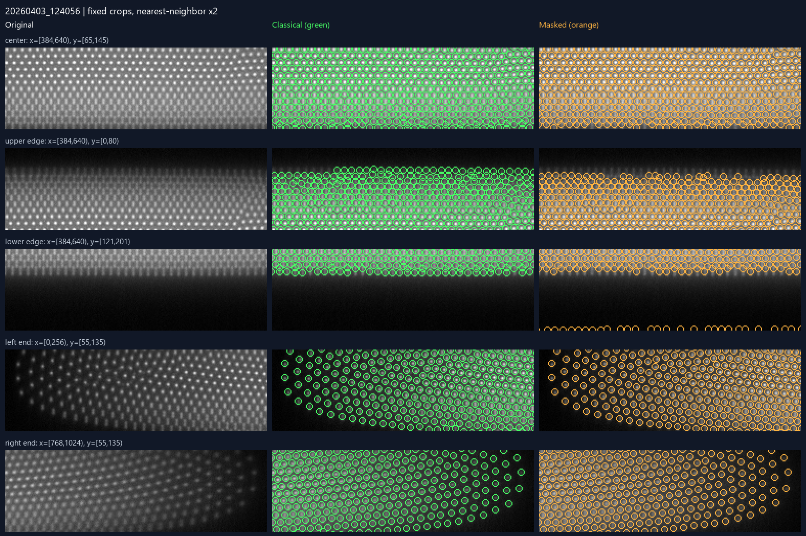
按文件名时间顺序等间隔抽样
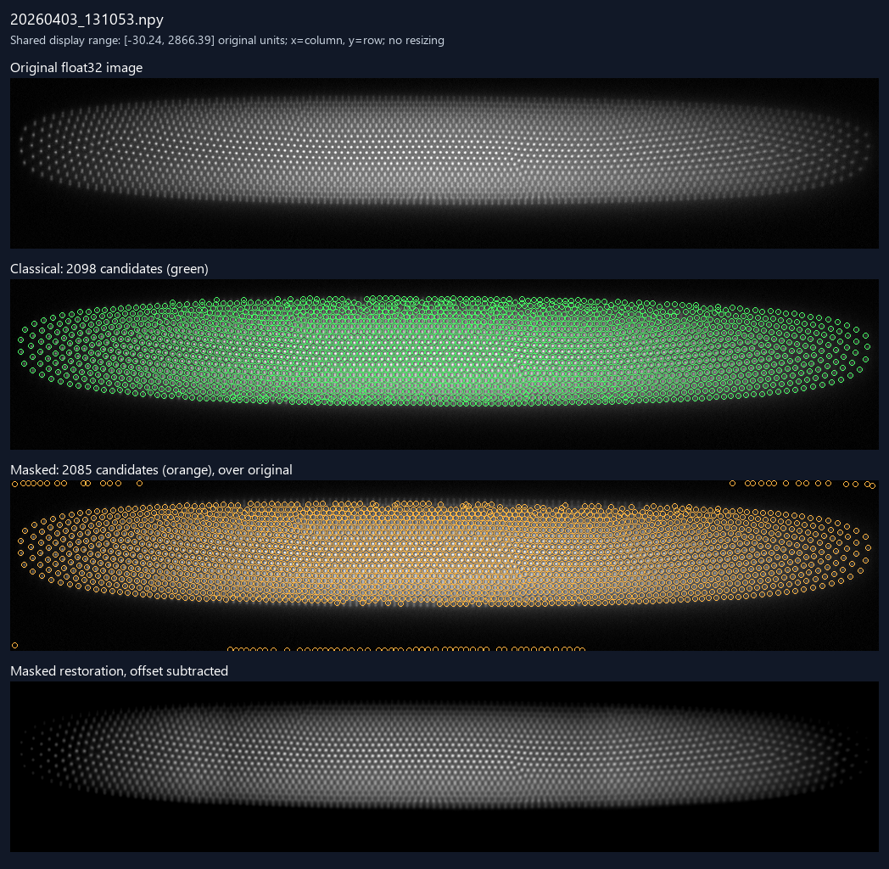
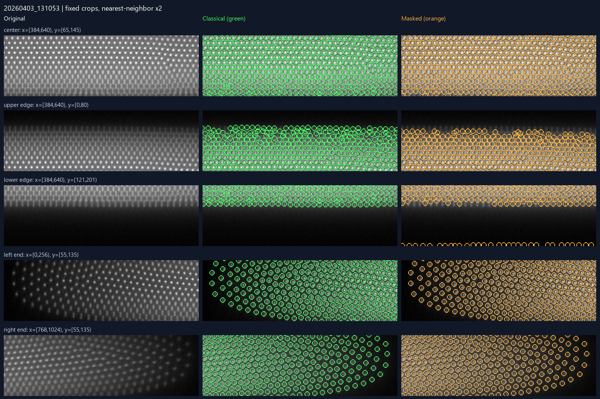
按文件名时间顺序等间隔抽样
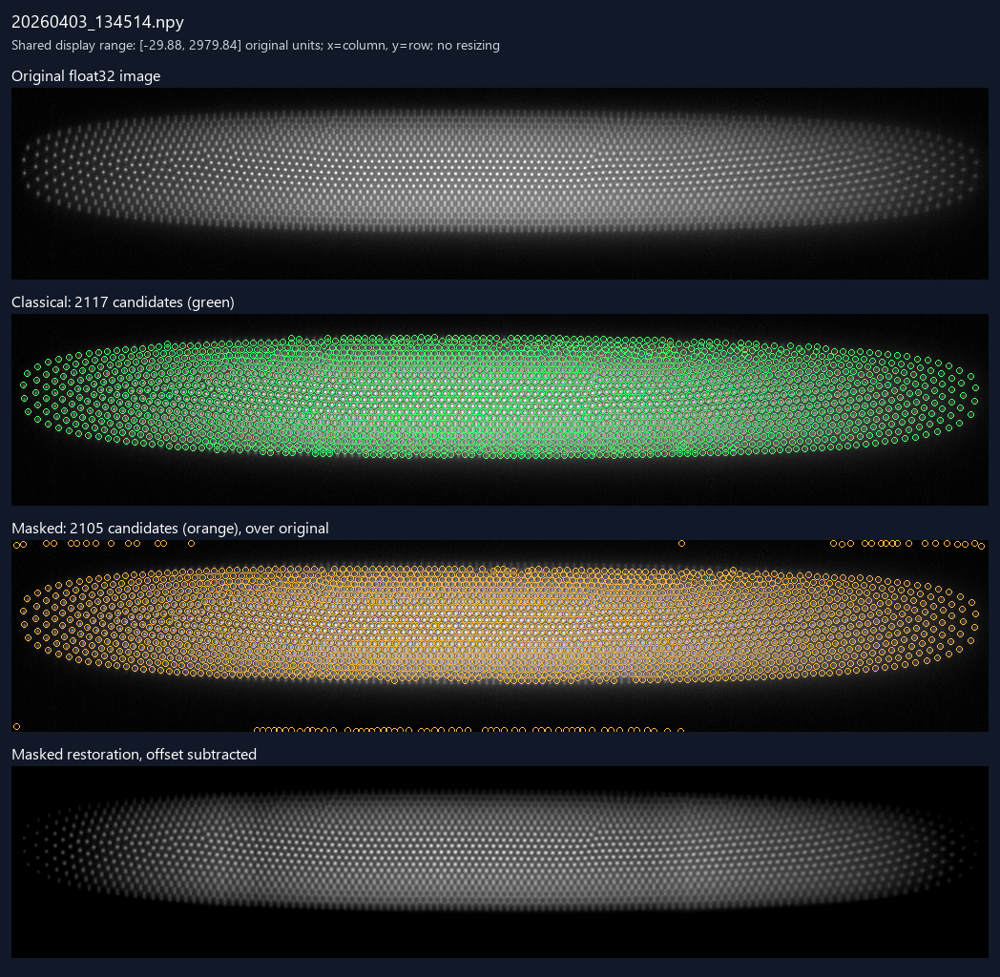
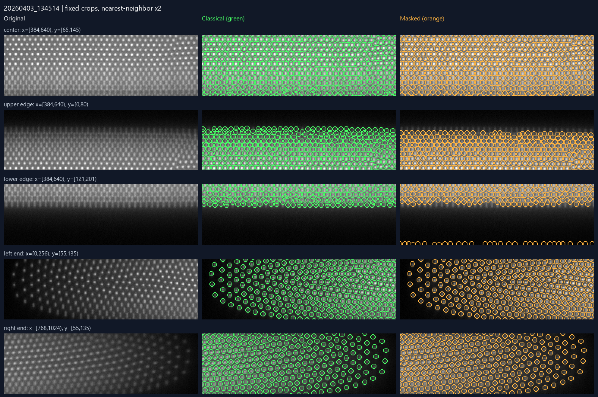
按文件名时间顺序等间隔抽样
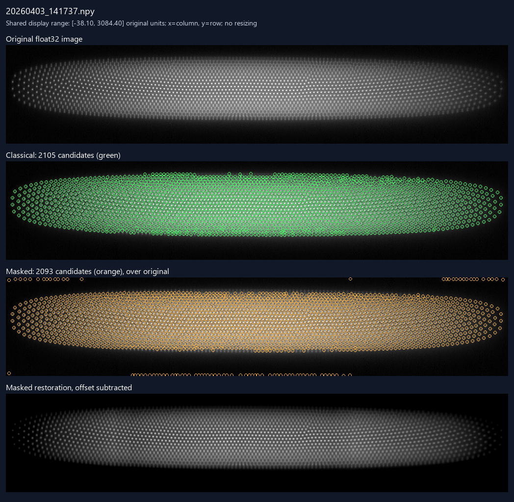
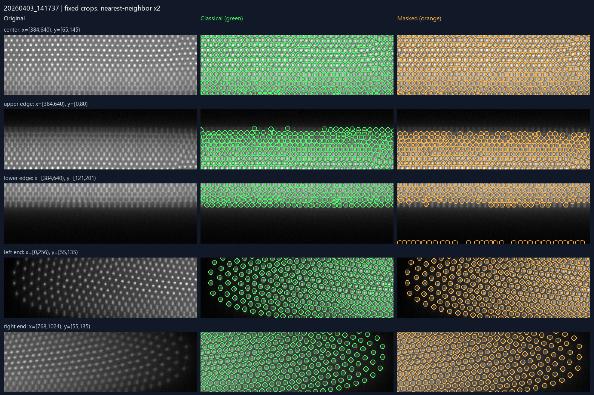
按文件名时间顺序等间隔抽样
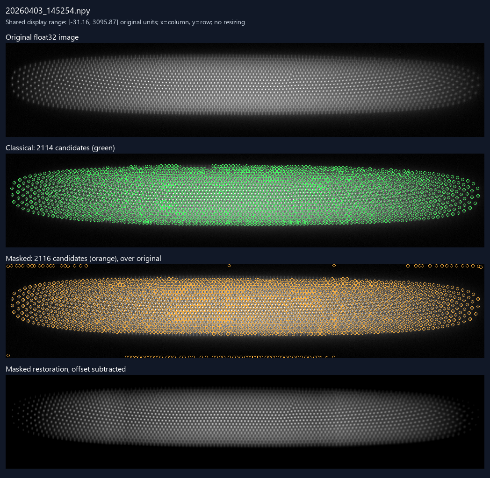
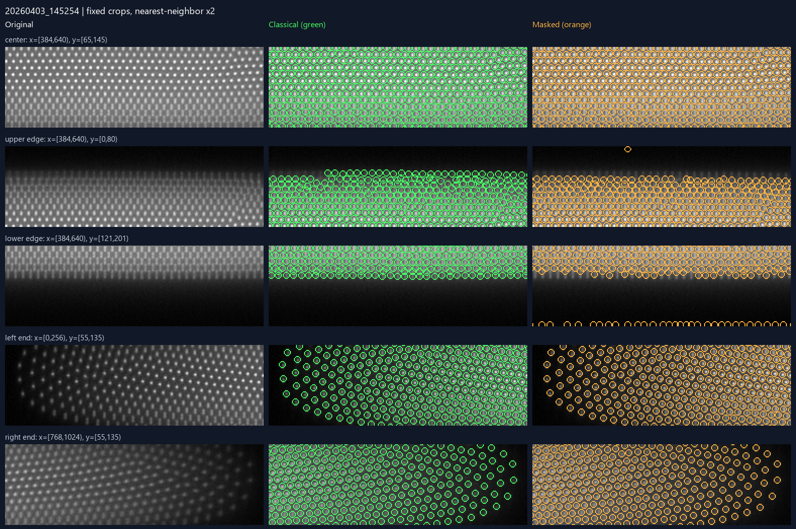
补充诊断：两方法候选数量差绝对值最大；不是代表性抽样
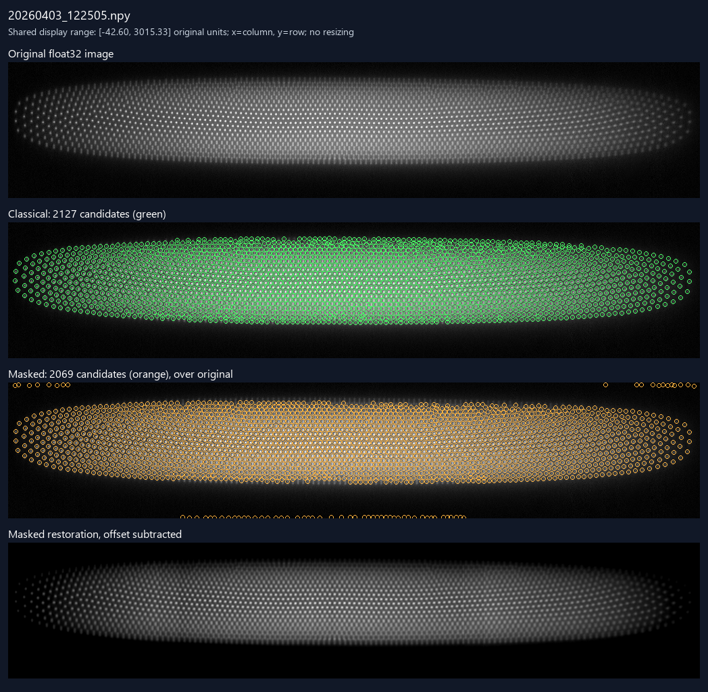
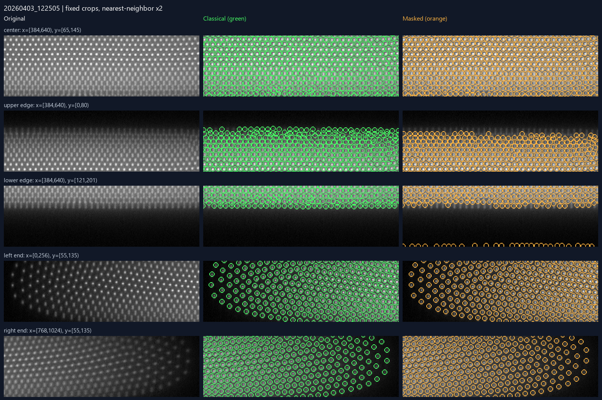
点击文件名查看原始 NPY；C/M 为两算法。未配对只表示方法间差异。边带统计指图像外侧 8 像素。
| 图像 | C 候选 | M 候选 | M−C | 配对 | C 未配对 | M 未配对 | C 边带 | M 边带 | 结果文件 |
|---|---|---|---|---|---|---|---|---|---|
| 20260403_121315.npy | 2117 | 2087 | -30 | 1967 | 150 | 120 | 0 | 76 | C 标圈 · C 坐标 · M 标圈 · M 坐标 · 恢复 NPY |
| 20260403_121347.npy | 2118 | 2082 | -36 | 1963 | 155 | 119 | 0 | 75 | C 标圈 · C 坐标 · M 标圈 · M 坐标 · 恢复 NPY |
| 20260403_121420.npy | 2116 | 2081 | -35 | 1967 | 149 | 114 | 0 | 73 | C 标圈 · C 坐标 · M 标圈 · M 坐标 · 恢复 NPY |
| 20260403_121452.npy | 2122 | 2070 | -52 | 1944 | 178 | 126 | 0 | 73 | C 标圈 · C 坐标 · M 标圈 · M 坐标 · 恢复 NPY |
| 20260403_121525.npy | 2118 | 2083 | -35 | 1964 | 154 | 119 | 0 | 68 | C 标圈 · C 坐标 · M 标圈 · M 坐标 · 恢复 NPY |
| 20260403_121557.npy | 2118 | 2070 | -48 | 1957 | 161 | 113 | 0 | 71 | C 标圈 · C 坐标 · M 标圈 · M 坐标 · 恢复 NPY |
| 20260403_121629.npy | 2123 | 2073 | -50 | 1965 | 158 | 108 | 0 | 73 | C 标圈 · C 坐标 · M 标圈 · M 坐标 · 恢复 NPY |
| 20260403_121702.npy | 2124 | 2084 | -40 | 1969 | 155 | 115 | 0 | 70 | C 标圈 · C 坐标 · M 标圈 · M 坐标 · 恢复 NPY |
| 20260403_121734.npy | 2116 | 2079 | -37 | 1972 | 144 | 107 | 0 | 71 | C 标圈 · C 坐标 · M 标圈 · M 坐标 · 恢复 NPY |
| 20260403_121806.npy | 2126 | 2082 | -44 | 1961 | 165 | 121 | 0 | 73 | C 标圈 · C 坐标 · M 标圈 · M 坐标 · 恢复 NPY |
| 20260403_121838.npy | 2112 | 2076 | -36 | 1961 | 151 | 115 | 0 | 73 | C 标圈 · C 坐标 · M 标圈 · M 坐标 · 恢复 NPY |
| 20260403_121911.npy | 2113 | 2088 | -25 | 1964 | 149 | 124 | 0 | 71 | C 标圈 · C 坐标 · M 标圈 · M 坐标 · 恢复 NPY |
| 20260403_121943.npy | 2120 | 2090 | -30 | 1975 | 145 | 115 | 0 | 76 | C 标圈 · C 坐标 · M 标圈 · M 坐标 · 恢复 NPY |
| 20260403_122015.npy | 2119 | 2072 | -47 | 1953 | 166 | 119 | 0 | 73 | C 标圈 · C 坐标 · M 标圈 · M 坐标 · 恢复 NPY |
| 20260403_122048.npy | 2118 | 2084 | -34 | 1959 | 159 | 125 | 0 | 74 | C 标圈 · C 坐标 · M 标圈 · M 坐标 · 恢复 NPY |
| 20260403_122120.npy | 2081 | 2072 | -9 | 1930 | 151 | 142 | 0 | 76 | C 标圈 · C 坐标 · M 标圈 · M 坐标 · 恢复 NPY |
| 20260403_122152.npy | 2112 | 2084 | -28 | 1949 | 163 | 135 | 0 | 80 | C 标圈 · C 坐标 · M 标圈 · M 坐标 · 恢复 NPY |
| 20260403_122224.npy | 2115 | 2079 | -36 | 1957 | 158 | 122 | 0 | 71 | C 标圈 · C 坐标 · M 标圈 · M 坐标 · 恢复 NPY |
| 20260403_122257.npy | 2129 | 2082 | -47 | 1967 | 162 | 115 | 0 | 77 | C 标圈 · C 坐标 · M 标圈 · M 坐标 · 恢复 NPY |
| 20260403_122329.npy | 2103 | 2058 | -45 | 1944 | 159 | 114 | 0 | 66 | C 标圈 · C 坐标 · M 标圈 · M 坐标 · 恢复 NPY |
| 20260403_122401.npy | 2112 | 2085 | -27 | 1969 | 143 | 116 | 0 | 73 | C 标圈 · C 坐标 · M 标圈 · M 坐标 · 恢复 NPY |
| 20260403_122433.npy | 2116 | 2077 | -39 | 1963 | 153 | 114 | 0 | 69 | C 标圈 · C 坐标 · M 标圈 · M 坐标 · 恢复 NPY |
| 20260403_122505.npy | 2127 | 2069 | -58 | 1962 | 165 | 107 | 0 | 69 | C 标圈 · C 坐标 · M 标圈 · M 坐标 · 恢复 NPY |
| 20260403_122538.npy | 2119 | 2071 | -48 | 1962 | 157 | 109 | 0 | 72 | C 标圈 · C 坐标 · M 标圈 · M 坐标 · 恢复 NPY |
| 20260403_122608.npy | 2120 | 2084 | -36 | 1967 | 153 | 117 | 0 | 75 | C 标圈 · C 坐标 · M 标圈 · M 坐标 · 恢复 NPY |
| 20260403_122639.npy | 2111 | 2095 | -16 | 1962 | 149 | 133 | 0 | 74 | C 标圈 · C 坐标 · M 标圈 · M 坐标 · 恢复 NPY |
| 20260403_122709.npy | 2115 | 2079 | -36 | 1954 | 161 | 125 | 0 | 78 | C 标圈 · C 坐标 · M 标圈 · M 坐标 · 恢复 NPY |
| 20260403_122740.npy | 2118 | 2075 | -43 | 1970 | 148 | 105 | 1 | 65 | C 标圈 · C 坐标 · M 标圈 · M 坐标 · 恢复 NPY |
| 20260403_122810.npy | 2110 | 2069 | -41 | 1957 | 153 | 112 | 0 | 75 | C 标圈 · C 坐标 · M 标圈 · M 坐标 · 恢复 NPY |
| 20260403_122841.npy | 2112 | 2078 | -34 | 1963 | 149 | 115 | 0 | 71 | C 标圈 · C 坐标 · M 标圈 · M 坐标 · 恢复 NPY |
| 20260403_122911.npy | 2117 | 2074 | -43 | 1963 | 154 | 111 | 0 | 77 | C 标圈 · C 坐标 · M 标圈 · M 坐标 · 恢复 NPY |
| 20260403_122942.npy | 2125 | 2070 | -55 | 1960 | 165 | 110 | 0 | 70 | C 标圈 · C 坐标 · M 标圈 · M 坐标 · 恢复 NPY |
| 20260403_123012.npy | 2114 | 2088 | -26 | 1969 | 145 | 119 | 0 | 76 | C 标圈 · C 坐标 · M 标圈 · M 坐标 · 恢复 NPY |
| 20260403_123043.npy | 2098 | 2082 | -16 | 1964 | 134 | 118 | 0 | 75 | C 标圈 · C 坐标 · M 标圈 · M 坐标 · 恢复 NPY |
| 20260403_123114.npy | 2120 | 2077 | -43 | 1975 | 145 | 102 | 0 | 71 | C 标圈 · C 坐标 · M 标圈 · M 坐标 · 恢复 NPY |
| 20260403_123144.npy | 2102 | 2096 | -6 | 1970 | 132 | 126 | 0 | 77 | C 标圈 · C 坐标 · M 标圈 · M 坐标 · 恢复 NPY |
| 20260403_123215.npy | 2108 | 2077 | -31 | 1958 | 150 | 119 | 0 | 74 | C 标圈 · C 坐标 · M 标圈 · M 坐标 · 恢复 NPY |
| 20260403_123246.npy | 2108 | 2092 | -16 | 1967 | 141 | 125 | 0 | 75 | C 标圈 · C 坐标 · M 标圈 · M 坐标 · 恢复 NPY |
| 20260403_123316.npy | 2119 | 2090 | -29 | 1973 | 146 | 117 | 0 | 79 | C 标圈 · C 坐标 · M 标圈 · M 坐标 · 恢复 NPY |
| 20260403_123347.npy | 2120 | 2077 | -43 | 1961 | 159 | 116 | 0 | 74 | C 标圈 · C 坐标 · M 标圈 · M 坐标 · 恢复 NPY |
| 20260403_123418.npy | 2102 | 2069 | -33 | 1960 | 142 | 109 | 0 | 78 | C 标圈 · C 坐标 · M 标圈 · M 坐标 · 恢复 NPY |
| 20260403_123448.npy | 2109 | 2073 | -36 | 1966 | 143 | 107 | 0 | 72 | C 标圈 · C 坐标 · M 标圈 · M 坐标 · 恢复 NPY |
| 20260403_123519.npy | 2099 | 2085 | -14 | 1972 | 127 | 113 | 0 | 73 | C 标圈 · C 坐标 · M 标圈 · M 坐标 · 恢复 NPY |
| 20260403_123550.npy | 2097 | 2075 | -22 | 1942 | 155 | 133 | 0 | 75 | C 标圈 · C 坐标 · M 标圈 · M 坐标 · 恢复 NPY |
| 20260403_123620.npy | 2122 | 2077 | -45 | 1960 | 162 | 117 | 0 | 75 | C 标圈 · C 坐标 · M 标圈 · M 坐标 · 恢复 NPY |
| 20260403_123651.npy | 2115 | 2074 | -41 | 1963 | 152 | 111 | 0 | 73 | C 标圈 · C 坐标 · M 标圈 · M 坐标 · 恢复 NPY |
| 20260403_123722.npy | 2114 | 2071 | -43 | 1954 | 160 | 117 | 0 | 72 | C 标圈 · C 坐标 · M 标圈 · M 坐标 · 恢复 NPY |
| 20260403_123752.npy | 2116 | 2080 | -36 | 1967 | 149 | 113 | 0 | 77 | C 标圈 · C 坐标 · M 标圈 · M 坐标 · 恢复 NPY |
| 20260403_123823.npy | 2104 | 2084 | -20 | 1964 | 140 | 120 | 0 | 77 | C 标圈 · C 坐标 · M 标圈 · M 坐标 · 恢复 NPY |
| 20260403_123854.npy | 2119 | 2077 | -42 | 1957 | 162 | 120 | 0 | 74 | C 标圈 · C 坐标 · M 标圈 · M 坐标 · 恢复 NPY |
| 20260403_123924.npy | 2110 | 2071 | -39 | 1948 | 162 | 123 | 0 | 63 | C 标圈 · C 坐标 · M 标圈 · M 坐标 · 恢复 NPY |
| 20260403_123955.npy | 2089 | 2066 | -23 | 1942 | 147 | 124 | 0 | 75 | C 标圈 · C 坐标 · M 标圈 · M 坐标 · 恢复 NPY |
| 20260403_124025.npy | 2118 | 2077 | -41 | 1970 | 148 | 107 | 0 | 70 | C 标圈 · C 坐标 · M 标圈 · M 坐标 · 恢复 NPY |
| 20260403_124056.npy | 2110 | 2085 | -25 | 1972 | 138 | 113 | 0 | 73 | C 标圈 · C 坐标 · M 标圈 · M 坐标 · 恢复 NPY |
| 20260403_124126.npy | 2114 | 2079 | -35 | 1962 | 152 | 117 | 0 | 74 | C 标圈 · C 坐标 · M 标圈 · M 坐标 · 恢复 NPY |
| 20260403_124157.npy | 2112 | 2076 | -36 | 1957 | 155 | 119 | 0 | 73 | C 标圈 · C 坐标 · M 标圈 · M 坐标 · 恢复 NPY |
| 20260403_124227.npy | 2128 | 2081 | -47 | 1972 | 156 | 109 | 0 | 77 | C 标圈 · C 坐标 · M 标圈 · M 坐标 · 恢复 NPY |
| 20260403_124258.npy | 2116 | 2079 | -37 | 1942 | 174 | 137 | 0 | 77 | C 标圈 · C 坐标 · M 标圈 · M 坐标 · 恢复 NPY |
| 20260403_124329.npy | 2093 | 2066 | -27 | 1954 | 139 | 112 | 0 | 74 | C 标圈 · C 坐标 · M 标圈 · M 坐标 · 恢复 NPY |
| 20260403_124400.npy | 2119 | 2082 | -37 | 1971 | 148 | 111 | 0 | 74 | C 标圈 · C 坐标 · M 标圈 · M 坐标 · 恢复 NPY |
| 20260403_124430.npy | 2113 | 2087 | -26 | 1970 | 143 | 117 | 0 | 75 | C 标圈 · C 坐标 · M 标圈 · M 坐标 · 恢复 NPY |
| 20260403_124501.npy | 2107 | 2094 | -13 | 1967 | 140 | 127 | 0 | 76 | C 标圈 · C 坐标 · M 标圈 · M 坐标 · 恢复 NPY |
| 20260403_124532.npy | 2115 | 2077 | -38 | 1952 | 163 | 125 | 0 | 74 | C 标圈 · C 坐标 · M 标圈 · M 坐标 · 恢复 NPY |
| 20260403_124602.npy | 2099 | 2073 | -26 | 1961 | 138 | 112 | 0 | 75 | C 标圈 · C 坐标 · M 标圈 · M 坐标 · 恢复 NPY |
| 20260403_124633.npy | 2123 | 2090 | -33 | 1968 | 155 | 122 | 0 | 80 | C 标圈 · C 坐标 · M 标圈 · M 坐标 · 恢复 NPY |
| 20260403_124704.npy | 2113 | 2086 | -27 | 1967 | 146 | 119 | 0 | 77 | C 标圈 · C 坐标 · M 标圈 · M 坐标 · 恢复 NPY |
| 20260403_124735.npy | 2118 | 2087 | -31 | 1974 | 144 | 113 | 0 | 74 | C 标圈 · C 坐标 · M 标圈 · M 坐标 · 恢复 NPY |
| 20260403_124805.npy | 2113 | 2091 | -22 | 1967 | 146 | 124 | 0 | 78 | C 标圈 · C 坐标 · M 标圈 · M 坐标 · 恢复 NPY |
| 20260403_124836.npy | 2112 | 2096 | -16 | 1975 | 137 | 121 | 0 | 77 | C 标圈 · C 坐标 · M 标圈 · M 坐标 · 恢复 NPY |
| 20260403_124907.npy | 2126 | 2087 | -39 | 1961 | 165 | 126 | 0 | 77 | C 标圈 · C 坐标 · M 标圈 · M 坐标 · 恢复 NPY |
| 20260403_124937.npy | 2117 | 2083 | -34 | 1966 | 151 | 117 | 0 | 74 | C 标圈 · C 坐标 · M 标圈 · M 坐标 · 恢复 NPY |
| 20260403_125008.npy | 2116 | 2090 | -26 | 1968 | 148 | 122 | 0 | 80 | C 标圈 · C 坐标 · M 标圈 · M 坐标 · 恢复 NPY |
| 20260403_125038.npy | 2120 | 2074 | -46 | 1951 | 169 | 123 | 0 | 76 | C 标圈 · C 坐标 · M 标圈 · M 坐标 · 恢复 NPY |
| 20260403_125109.npy | 2101 | 2085 | -16 | 1965 | 136 | 120 | 0 | 81 | C 标圈 · C 坐标 · M 标圈 · M 坐标 · 恢复 NPY |
| 20260403_125139.npy | 2111 | 2069 | -42 | 1945 | 166 | 124 | 0 | 79 | C 标圈 · C 坐标 · M 标圈 · M 坐标 · 恢复 NPY |
| 20260403_125209.npy | 2112 | 2108 | -4 | 1958 | 154 | 150 | 0 | 88 | C 标圈 · C 坐标 · M 标圈 · M 坐标 · 恢复 NPY |
| 20260403_125240.npy | 2091 | 2077 | -14 | 1950 | 141 | 127 | 0 | 74 | C 标圈 · C 坐标 · M 标圈 · M 坐标 · 恢复 NPY |
| 20260403_125310.npy | 2103 | 2085 | -18 | 1964 | 139 | 121 | 0 | 79 | C 标圈 · C 坐标 · M 标圈 · M 坐标 · 恢复 NPY |
| 20260403_125341.npy | 2121 | 2085 | -36 | 1959 | 162 | 126 | 0 | 75 | C 标圈 · C 坐标 · M 标圈 · M 坐标 · 恢复 NPY |
| 20260403_125411.npy | 2117 | 2089 | -28 | 1962 | 155 | 127 | 0 | 81 | C 标圈 · C 坐标 · M 标圈 · M 坐标 · 恢复 NPY |
| 20260403_125444.npy | 2115 | 2080 | -35 | 1951 | 164 | 129 | 0 | 79 | C 标圈 · C 坐标 · M 标圈 · M 坐标 · 恢复 NPY |
| 20260403_125514.npy | 2111 | 2092 | -19 | 1960 | 151 | 132 | 0 | 83 | C 标圈 · C 坐标 · M 标圈 · M 坐标 · 恢复 NPY |
| 20260403_125544.npy | 2121 | 2085 | -36 | 1957 | 164 | 128 | 0 | 73 | C 标圈 · C 坐标 · M 标圈 · M 坐标 · 恢复 NPY |
| 20260403_125624.npy | 2114 | 2084 | -30 | 1965 | 149 | 119 | 0 | 78 | C 标圈 · C 坐标 · M 标圈 · M 坐标 · 恢复 NPY |
| 20260403_125654.npy | 2116 | 2075 | -41 | 1954 | 162 | 121 | 0 | 78 | C 标圈 · C 坐标 · M 标圈 · M 坐标 · 恢复 NPY |
| 20260403_125724.npy | 2117 | 2084 | -33 | 1955 | 162 | 129 | 0 | 78 | C 标圈 · C 坐标 · M 标圈 · M 坐标 · 恢复 NPY |
| 20260403_125754.npy | 2107 | 2076 | -31 | 1955 | 152 | 121 | 0 | 80 | C 标圈 · C 坐标 · M 标圈 · M 坐标 · 恢复 NPY |
| 20260403_125824.npy | 2116 | 2084 | -32 | 1964 | 152 | 120 | 0 | 80 | C 标圈 · C 坐标 · M 标圈 · M 坐标 · 恢复 NPY |
| 20260403_125904.npy | 2090 | 2078 | -12 | 1958 | 132 | 120 | 0 | 79 | C 标圈 · C 坐标 · M 标圈 · M 坐标 · 恢复 NPY |
| 20260403_125944.npy | 2116 | 2089 | -27 | 1953 | 163 | 136 | 0 | 78 | C 标圈 · C 坐标 · M 标圈 · M 坐标 · 恢复 NPY |
| 20260403_130024.npy | 2110 | 2080 | -30 | 1958 | 152 | 122 | 0 | 81 | C 标圈 · C 坐标 · M 标圈 · M 坐标 · 恢复 NPY |
| 20260403_130104.npy | 2114 | 2093 | -21 | 1962 | 152 | 131 | 0 | 86 | C 标圈 · C 坐标 · M 标圈 · M 坐标 · 恢复 NPY |
| 20260403_130143.npy | 2113 | 2080 | -33 | 1954 | 159 | 126 | 0 | 77 | C 标圈 · C 坐标 · M 标圈 · M 坐标 · 恢复 NPY |
| 20260403_130223.npy | 2112 | 2094 | -18 | 1949 | 163 | 145 | 0 | 85 | C 标圈 · C 坐标 · M 标圈 · M 坐标 · 恢复 NPY |
| 20260403_130302.npy | 2110 | 2082 | -28 | 1966 | 144 | 116 | 0 | 80 | C 标圈 · C 坐标 · M 标圈 · M 坐标 · 恢复 NPY |
| 20260403_130342.npy | 2119 | 2079 | -40 | 1957 | 162 | 122 | 0 | 77 | C 标圈 · C 坐标 · M 标圈 · M 坐标 · 恢复 NPY |
| 20260403_130421.npy | 2117 | 2087 | -30 | 1945 | 172 | 142 | 0 | 86 | C 标圈 · C 坐标 · M 标圈 · M 坐标 · 恢复 NPY |
| 20260403_130501.npy | 2118 | 2088 | -30 | 1955 | 163 | 133 | 0 | 81 | C 标圈 · C 坐标 · M 标圈 · M 坐标 · 恢复 NPY |
| 20260403_130540.npy | 2106 | 2102 | -4 | 1957 | 149 | 145 | 0 | 90 | C 标圈 · C 坐标 · M 标圈 · M 坐标 · 恢复 NPY |
| 20260403_130619.npy | 2104 | 2092 | -12 | 1971 | 133 | 121 | 0 | 81 | C 标圈 · C 坐标 · M 标圈 · M 坐标 · 恢复 NPY |
| 20260403_130658.npy | 2115 | 2076 | -39 | 1962 | 153 | 114 | 0 | 75 | C 标圈 · C 坐标 · M 标圈 · M 坐标 · 恢复 NPY |
| 20260403_130738.npy | 2118 | 2088 | -30 | 1966 | 152 | 122 | 0 | 78 | C 标圈 · C 坐标 · M 标圈 · M 坐标 · 恢复 NPY |
| 20260403_130816.npy | 2113 | 2075 | -38 | 1951 | 162 | 124 | 0 | 79 | C 标圈 · C 坐标 · M 标圈 · M 坐标 · 恢复 NPY |
| 20260403_130855.npy | 2113 | 2083 | -30 | 1958 | 155 | 125 | 0 | 85 | C 标圈 · C 坐标 · M 标圈 · M 坐标 · 恢复 NPY |
| 20260403_130935.npy | 2104 | 2074 | -30 | 1948 | 156 | 126 | 0 | 80 | C 标圈 · C 坐标 · M 标圈 · M 坐标 · 恢复 NPY |
| 20260403_131014.npy | 2120 | 2080 | -40 | 1948 | 172 | 132 | 0 | 85 | C 标圈 · C 坐标 · M 标圈 · M 坐标 · 恢复 NPY |
| 20260403_131053.npy | 2098 | 2085 | -13 | 1945 | 153 | 140 | 0 | 81 | C 标圈 · C 坐标 · M 标圈 · M 坐标 · 恢复 NPY |
| 20260403_131132.npy | 2122 | 2094 | -28 | 1969 | 153 | 125 | 0 | 90 | C 标圈 · C 坐标 · M 标圈 · M 坐标 · 恢复 NPY |
| 20260403_131211.npy | 2122 | 2094 | -28 | 1954 | 168 | 140 | 0 | 90 | C 标圈 · C 坐标 · M 标圈 · M 坐标 · 恢复 NPY |
| 20260403_131250.npy | 2119 | 2078 | -41 | 1947 | 172 | 131 | 0 | 84 | C 标圈 · C 坐标 · M 标圈 · M 坐标 · 恢复 NPY |
| 20260403_131329.npy | 2117 | 2091 | -26 | 1963 | 154 | 128 | 0 | 96 | C 标圈 · C 坐标 · M 标圈 · M 坐标 · 恢复 NPY |
| 20260403_131408.npy | 2117 | 2094 | -23 | 1957 | 160 | 137 | 0 | 88 | C 标圈 · C 坐标 · M 标圈 · M 坐标 · 恢复 NPY |
| 20260403_131447.npy | 2121 | 2102 | -19 | 1963 | 158 | 139 | 0 | 93 | C 标圈 · C 坐标 · M 标圈 · M 坐标 · 恢复 NPY |
| 20260403_131526.npy | 2107 | 2087 | -20 | 1953 | 154 | 134 | 0 | 90 | C 标圈 · C 坐标 · M 标圈 · M 坐标 · 恢复 NPY |
| 20260403_131604.npy | 2115 | 2088 | -27 | 1938 | 177 | 150 | 0 | 101 | C 标圈 · C 坐标 · M 标圈 · M 坐标 · 恢复 NPY |
| 20260403_131643.npy | 2108 | 2084 | -24 | 1957 | 151 | 127 | 0 | 87 | C 标圈 · C 坐标 · M 标圈 · M 坐标 · 恢复 NPY |
| 20260403_131721.npy | 2112 | 2080 | -32 | 1961 | 151 | 119 | 0 | 86 | C 标圈 · C 坐标 · M 标圈 · M 坐标 · 恢复 NPY |
| 20260403_131800.npy | 2127 | 2096 | -31 | 1964 | 163 | 132 | 0 | 82 | C 标圈 · C 坐标 · M 标圈 · M 坐标 · 恢复 NPY |
| 20260403_131838.npy | 2123 | 2094 | -29 | 1960 | 163 | 134 | 0 | 90 | C 标圈 · C 坐标 · M 标圈 · M 坐标 · 恢复 NPY |
| 20260403_131917.npy | 2115 | 2095 | -20 | 1972 | 143 | 123 | 0 | 84 | C 标圈 · C 坐标 · M 标圈 · M 坐标 · 恢复 NPY |
| 20260403_131956.npy | 2124 | 2084 | -40 | 1951 | 173 | 133 | 0 | 85 | C 标圈 · C 坐标 · M 标圈 · M 坐标 · 恢复 NPY |
| 20260403_132034.npy | 2116 | 2097 | -19 | 1964 | 152 | 133 | 0 | 84 | C 标圈 · C 坐标 · M 标圈 · M 坐标 · 恢复 NPY |
| 20260403_132113.npy | 2106 | 2088 | -18 | 1960 | 146 | 128 | 0 | 88 | C 标圈 · C 坐标 · M 标圈 · M 坐标 · 恢复 NPY |
| 20260403_132157.npy | 2126 | 2094 | -32 | 1963 | 163 | 131 | 0 | 86 | C 标圈 · C 坐标 · M 标圈 · M 坐标 · 恢复 NPY |
| 20260403_132235.npy | 2111 | 2083 | -28 | 1956 | 155 | 127 | 0 | 87 | C 标圈 · C 坐标 · M 标圈 · M 坐标 · 恢复 NPY |
| 20260403_132313.npy | 2108 | 2096 | -12 | 1967 | 141 | 129 | 0 | 88 | C 标圈 · C 坐标 · M 标圈 · M 坐标 · 恢复 NPY |
| 20260403_132352.npy | 2115 | 2097 | -18 | 1952 | 163 | 145 | 0 | 89 | C 标圈 · C 坐标 · M 标圈 · M 坐标 · 恢复 NPY |
| 20260403_132430.npy | 2109 | 2100 | -9 | 1956 | 153 | 144 | 0 | 91 | C 标圈 · C 坐标 · M 标圈 · M 坐标 · 恢复 NPY |
| 20260403_132508.npy | 2117 | 2093 | -24 | 1970 | 147 | 123 | 0 | 86 | C 标圈 · C 坐标 · M 标圈 · M 坐标 · 恢复 NPY |
| 20260403_132547.npy | 2114 | 2103 | -11 | 1967 | 147 | 136 | 0 | 90 | C 标圈 · C 坐标 · M 标圈 · M 坐标 · 恢复 NPY |
| 20260403_132626.npy | 2099 | 2101 | +2 | 1962 | 137 | 139 | 0 | 89 | C 标圈 · C 坐标 · M 标圈 · M 坐标 · 恢复 NPY |
| 20260403_132704.npy | 2114 | 2101 | -13 | 1956 | 158 | 145 | 0 | 90 | C 标圈 · C 坐标 · M 标圈 · M 坐标 · 恢复 NPY |
| 20260403_132742.npy | 2114 | 2088 | -26 | 1956 | 158 | 132 | 0 | 88 | C 标圈 · C 坐标 · M 标圈 · M 坐标 · 恢复 NPY |
| 20260403_132821.npy | 2112 | 2085 | -27 | 1952 | 160 | 133 | 0 | 84 | C 标圈 · C 坐标 · M 标圈 · M 坐标 · 恢复 NPY |
| 20260403_132900.npy | 2124 | 2107 | -17 | 1962 | 162 | 145 | 0 | 94 | C 标圈 · C 坐标 · M 标圈 · M 坐标 · 恢复 NPY |
| 20260403_132938.npy | 2121 | 2104 | -17 | 1963 | 158 | 141 | 0 | 95 | C 标圈 · C 坐标 · M 标圈 · M 坐标 · 恢复 NPY |
| 20260403_133017.npy | 2114 | 2085 | -29 | 1962 | 152 | 123 | 0 | 80 | C 标圈 · C 坐标 · M 标圈 · M 坐标 · 恢复 NPY |
| 20260403_133055.npy | 2111 | 2080 | -31 | 1963 | 148 | 117 | 0 | 84 | C 标圈 · C 坐标 · M 标圈 · M 坐标 · 恢复 NPY |
| 20260403_133134.npy | 2116 | 2093 | -23 | 1957 | 159 | 136 | 0 | 89 | C 标圈 · C 坐标 · M 标圈 · M 坐标 · 恢复 NPY |
| 20260403_133213.npy | 2118 | 2091 | -27 | 1956 | 162 | 135 | 0 | 87 | C 标圈 · C 坐标 · M 标圈 · M 坐标 · 恢复 NPY |
| 20260403_133252.npy | 2114 | 2100 | -14 | 1964 | 150 | 136 | 0 | 89 | C 标圈 · C 坐标 · M 标圈 · M 坐标 · 恢复 NPY |
| 20260403_133330.npy | 2123 | 2102 | -21 | 1957 | 166 | 145 | 0 | 90 | C 标圈 · C 坐标 · M 标圈 · M 坐标 · 恢复 NPY |
| 20260403_133409.npy | 2121 | 2095 | -26 | 1960 | 161 | 135 | 0 | 88 | C 标圈 · C 坐标 · M 标圈 · M 坐标 · 恢复 NPY |
| 20260403_133448.npy | 2130 | 2101 | -29 | 1979 | 151 | 122 | 0 | 87 | C 标圈 · C 坐标 · M 标圈 · M 坐标 · 恢复 NPY |
| 20260403_133527.npy | 2111 | 2098 | -13 | 1953 | 158 | 145 | 1 | 88 | C 标圈 · C 坐标 · M 标圈 · M 坐标 · 恢复 NPY |
| 20260403_133606.npy | 2121 | 2093 | -28 | 1955 | 166 | 138 | 0 | 86 | C 标圈 · C 坐标 · M 标圈 · M 坐标 · 恢复 NPY |
| 20260403_133645.npy | 2122 | 2095 | -27 | 1957 | 165 | 138 | 0 | 85 | C 标圈 · C 坐标 · M 标圈 · M 坐标 · 恢复 NPY |
| 20260403_133724.npy | 2117 | 2096 | -21 | 1971 | 146 | 125 | 0 | 84 | C 标圈 · C 坐标 · M 标圈 · M 坐标 · 恢复 NPY |
| 20260403_133803.npy | 2114 | 2086 | -28 | 1959 | 155 | 127 | 0 | 83 | C 标圈 · C 坐标 · M 标圈 · M 坐标 · 恢复 NPY |
| 20260403_133842.npy | 2121 | 2100 | -21 | 1964 | 157 | 136 | 0 | 91 | C 标圈 · C 坐标 · M 标圈 · M 坐标 · 恢复 NPY |
| 20260403_133921.npy | 2121 | 2092 | -29 | 1964 | 157 | 128 | 0 | 85 | C 标圈 · C 坐标 · M 标圈 · M 坐标 · 恢复 NPY |
| 20260403_134001.npy | 2123 | 2096 | -27 | 1970 | 153 | 126 | 0 | 86 | C 标圈 · C 坐标 · M 标圈 · M 坐标 · 恢复 NPY |
| 20260403_134039.npy | 2109 | 2095 | -14 | 1967 | 142 | 128 | 0 | 88 | C 标圈 · C 坐标 · M 标圈 · M 坐标 · 恢复 NPY |
| 20260403_134119.npy | 2127 | 2096 | -31 | 1955 | 172 | 141 | 0 | 91 | C 标圈 · C 坐标 · M 标圈 · M 坐标 · 恢复 NPY |
| 20260403_134158.npy | 2112 | 2096 | -16 | 1960 | 152 | 136 | 0 | 83 | C 标圈 · C 坐标 · M 标圈 · M 坐标 · 恢复 NPY |
| 20260403_134237.npy | 2115 | 2090 | -25 | 1960 | 155 | 130 | 0 | 77 | C 标圈 · C 坐标 · M 标圈 · M 坐标 · 恢复 NPY |
| 20260403_134316.npy | 2091 | 2099 | +8 | 1954 | 137 | 145 | 0 | 85 | C 标圈 · C 坐标 · M 标圈 · M 坐标 · 恢复 NPY |
| 20260403_134356.npy | 2123 | 2093 | -30 | 1963 | 160 | 130 | 0 | 81 | C 标圈 · C 坐标 · M 标圈 · M 坐标 · 恢复 NPY |
| 20260403_134435.npy | 2109 | 2100 | -9 | 1971 | 138 | 129 | 0 | 83 | C 标圈 · C 坐标 · M 标圈 · M 坐标 · 恢复 NPY |
| 20260403_134514.npy | 2117 | 2105 | -12 | 1970 | 147 | 135 | 0 | 88 | C 标圈 · C 坐标 · M 标圈 · M 坐标 · 恢复 NPY |
| 20260403_134554.npy | 2123 | 2097 | -26 | 1981 | 142 | 116 | 0 | 79 | C 标圈 · C 坐标 · M 标圈 · M 坐标 · 恢复 NPY |
| 20260403_134633.npy | 2104 | 2098 | -6 | 1966 | 138 | 132 | 0 | 81 | C 标圈 · C 坐标 · M 标圈 · M 坐标 · 恢复 NPY |
| 20260403_134713.npy | 2116 | 2092 | -24 | 1968 | 148 | 124 | 0 | 83 | C 标圈 · C 坐标 · M 标圈 · M 坐标 · 恢复 NPY |
| 20260403_134753.npy | 2106 | 2102 | -4 | 1978 | 128 | 124 | 0 | 87 | C 标圈 · C 坐标 · M 标圈 · M 坐标 · 恢复 NPY |
| 20260403_134832.npy | 2115 | 2087 | -28 | 1971 | 144 | 116 | 0 | 80 | C 标圈 · C 坐标 · M 标圈 · M 坐标 · 恢复 NPY |
| 20260403_134912.npy | 2112 | 2099 | -13 | 1966 | 146 | 133 | 0 | 84 | C 标圈 · C 坐标 · M 标圈 · M 坐标 · 恢复 NPY |
| 20260403_134952.npy | 2126 | 2104 | -22 | 1977 | 149 | 127 | 0 | 82 | C 标圈 · C 坐标 · M 标圈 · M 坐标 · 恢复 NPY |
| 20260403_135032.npy | 2114 | 2101 | -13 | 1972 | 142 | 129 | 0 | 87 | C 标圈 · C 坐标 · M 标圈 · M 坐标 · 恢复 NPY |
| 20260403_135112.npy | 2124 | 2086 | -38 | 1963 | 161 | 123 | 0 | 78 | C 标圈 · C 坐标 · M 标圈 · M 坐标 · 恢复 NPY |
| 20260403_135151.npy | 2125 | 2095 | -30 | 1965 | 160 | 130 | 0 | 85 | C 标圈 · C 坐标 · M 标圈 · M 坐标 · 恢复 NPY |
| 20260403_135231.npy | 2122 | 2097 | -25 | 1964 | 158 | 133 | 0 | 86 | C 标圈 · C 坐标 · M 标圈 · M 坐标 · 恢复 NPY |
| 20260403_135301.npy | 2126 | 2097 | -29 | 1965 | 161 | 132 | 0 | 81 | C 标圈 · C 坐标 · M 标圈 · M 坐标 · 恢复 NPY |
| 20260403_135331.npy | 2119 | 2096 | -23 | 1971 | 148 | 125 | 0 | 76 | C 标圈 · C 坐标 · M 标圈 · M 坐标 · 恢复 NPY |
| 20260403_135401.npy | 2117 | 2088 | -29 | 1966 | 151 | 122 | 0 | 81 | C 标圈 · C 坐标 · M 标圈 · M 坐标 · 恢复 NPY |
| 20260403_135442.npy | 2117 | 2098 | -19 | 1978 | 139 | 120 | 0 | 88 | C 标圈 · C 坐标 · M 标圈 · M 坐标 · 恢复 NPY |
| 20260403_135512.npy | 2121 | 2100 | -21 | 1965 | 156 | 135 | 0 | 86 | C 标圈 · C 坐标 · M 标圈 · M 坐标 · 恢复 NPY |
| 20260403_135548.npy | 2120 | 2093 | -27 | 1972 | 148 | 121 | 0 | 78 | C 标圈 · C 坐标 · M 标圈 · M 坐标 · 恢复 NPY |
| 20260403_135627.npy | 2127 | 2111 | -16 | 1970 | 157 | 141 | 0 | 89 | C 标圈 · C 坐标 · M 标圈 · M 坐标 · 恢复 NPY |
| 20260403_135707.npy | 2118 | 2090 | -28 | 1960 | 158 | 130 | 0 | 77 | C 标圈 · C 坐标 · M 标圈 · M 坐标 · 恢复 NPY |
| 20260403_135747.npy | 2116 | 2099 | -17 | 1971 | 145 | 128 | 0 | 85 | C 标圈 · C 坐标 · M 标圈 · M 坐标 · 恢复 NPY |
| 20260403_135827.npy | 2115 | 2095 | -20 | 1958 | 157 | 137 | 0 | 87 | C 标圈 · C 坐标 · M 标圈 · M 坐标 · 恢复 NPY |
| 20260403_135907.npy | 2129 | 2092 | -37 | 1976 | 153 | 116 | 0 | 78 | C 标圈 · C 坐标 · M 标圈 · M 坐标 · 恢复 NPY |
| 20260403_135946.npy | 2124 | 2106 | -18 | 1978 | 146 | 128 | 0 | 86 | C 标圈 · C 坐标 · M 标圈 · M 坐标 · 恢复 NPY |
| 20260403_140026.npy | 2107 | 2093 | -14 | 1962 | 145 | 131 | 0 | 84 | C 标圈 · C 坐标 · M 标圈 · M 坐标 · 恢复 NPY |
| 20260403_140056.npy | 2113 | 2082 | -31 | 1959 | 154 | 123 | 0 | 78 | C 标圈 · C 坐标 · M 标圈 · M 坐标 · 恢复 NPY |
| 20260403_140136.npy | 2134 | 2098 | -36 | 1964 | 170 | 134 | 0 | 80 | C 标圈 · C 坐标 · M 标圈 · M 坐标 · 恢复 NPY |
| 20260403_140216.npy | 2114 | 2097 | -17 | 1977 | 137 | 120 | 0 | 82 | C 标圈 · C 坐标 · M 标圈 · M 坐标 · 恢复 NPY |
| 20260403_140256.npy | 2109 | 2095 | -14 | 1968 | 141 | 127 | 0 | 83 | C 标圈 · C 坐标 · M 标圈 · M 坐标 · 恢复 NPY |
| 20260403_140326.npy | 2116 | 2095 | -21 | 1963 | 153 | 132 | 0 | 82 | C 标圈 · C 坐标 · M 标圈 · M 坐标 · 恢复 NPY |
| 20260403_140356.npy | 2123 | 2092 | -31 | 1972 | 151 | 120 | 0 | 79 | C 标圈 · C 坐标 · M 标圈 · M 坐标 · 恢复 NPY |
| 20260403_140436.npy | 2128 | 2097 | -31 | 1963 | 165 | 134 | 0 | 84 | C 标圈 · C 坐标 · M 标圈 · M 坐标 · 恢复 NPY |
| 20260403_140506.npy | 2118 | 2102 | -16 | 1980 | 138 | 122 | 0 | 81 | C 标圈 · C 坐标 · M 标圈 · M 坐标 · 恢复 NPY |
| 20260403_140546.npy | 2122 | 2102 | -20 | 1966 | 156 | 136 | 0 | 82 | C 标圈 · C 坐标 · M 标圈 · M 坐标 · 恢复 NPY |
| 20260403_140616.npy | 2117 | 2078 | -39 | 1963 | 154 | 115 | 0 | 77 | C 标圈 · C 坐标 · M 标圈 · M 坐标 · 恢复 NPY |
| 20260403_140647.npy | 2095 | 2098 | +3 | 1965 | 130 | 133 | 0 | 84 | C 标圈 · C 坐标 · M 标圈 · M 坐标 · 恢复 NPY |
| 20260403_140727.npy | 2128 | 2097 | -31 | 1975 | 153 | 122 | 0 | 88 | C 标圈 · C 坐标 · M 标圈 · M 坐标 · 恢复 NPY |
| 20260403_140757.npy | 2120 | 2100 | -20 | 1959 | 161 | 141 | 0 | 83 | C 标圈 · C 坐标 · M 标圈 · M 坐标 · 恢复 NPY |
| 20260403_140827.npy | 2124 | 2100 | -24 | 1972 | 152 | 128 | 0 | 83 | C 标圈 · C 坐标 · M 标圈 · M 坐标 · 恢复 NPY |
| 20260403_140907.npy | 2119 | 2105 | -14 | 1973 | 146 | 132 | 0 | 88 | C 标圈 · C 坐标 · M 标圈 · M 坐标 · 恢复 NPY |
| 20260403_140947.npy | 2126 | 2093 | -33 | 1961 | 165 | 132 | 0 | 82 | C 标圈 · C 坐标 · M 标圈 · M 坐标 · 恢复 NPY |
| 20260403_141017.npy | 2108 | 2098 | -10 | 1965 | 143 | 133 | 0 | 82 | C 标圈 · C 坐标 · M 标圈 · M 坐标 · 恢复 NPY |
| 20260403_141047.npy | 2126 | 2109 | -17 | 1976 | 150 | 133 | 0 | 84 | C 标圈 · C 坐标 · M 标圈 · M 坐标 · 恢复 NPY |
| 20260403_141127.npy | 2129 | 2105 | -24 | 1960 | 169 | 145 | 0 | 90 | C 标圈 · C 坐标 · M 标圈 · M 坐标 · 恢复 NPY |
| 20260403_141157.npy | 2112 | 2089 | -23 | 1972 | 140 | 117 | 0 | 78 | C 标圈 · C 坐标 · M 标圈 · M 坐标 · 恢复 NPY |
| 20260403_141237.npy | 2098 | 2095 | -3 | 1965 | 133 | 130 | 0 | 79 | C 标圈 · C 坐标 · M 标圈 · M 坐标 · 恢复 NPY |
| 20260403_141307.npy | 2118 | 2095 | -23 | 1981 | 137 | 114 | 0 | 77 | C 标圈 · C 坐标 · M 标圈 · M 坐标 · 恢复 NPY |
| 20260403_141347.npy | 2118 | 2106 | -12 | 1969 | 149 | 137 | 0 | 83 | C 标圈 · C 坐标 · M 标圈 · M 坐标 · 恢复 NPY |
| 20260403_141427.npy | 2109 | 2099 | -10 | 1956 | 153 | 143 | 0 | 83 | C 标圈 · C 坐标 · M 标圈 · M 坐标 · 恢复 NPY |
| 20260403_141507.npy | 2137 | 2104 | -33 | 1977 | 160 | 127 | 0 | 80 | C 标圈 · C 坐标 · M 标圈 · M 坐标 · 恢复 NPY |
| 20260403_141537.npy | 2116 | 2091 | -25 | 1968 | 148 | 123 | 0 | 76 | C 标圈 · C 坐标 · M 标圈 · M 坐标 · 恢复 NPY |
| 20260403_141617.npy | 2129 | 2100 | -29 | 1973 | 156 | 127 | 0 | 83 | C 标圈 · C 坐标 · M 标圈 · M 坐标 · 恢复 NPY |
| 20260403_141657.npy | 2122 | 2108 | -14 | 1969 | 153 | 139 | 0 | 85 | C 标圈 · C 坐标 · M 标圈 · M 坐标 · 恢复 NPY |
| 20260403_141737.npy | 2105 | 2093 | -12 | 1966 | 139 | 127 | 0 | 87 | C 标圈 · C 坐标 · M 标圈 · M 坐标 · 恢复 NPY |
| 20260403_141816.npy | 2104 | 2094 | -10 | 1963 | 141 | 131 | 0 | 83 | C 标圈 · C 坐标 · M 标圈 · M 坐标 · 恢复 NPY |
| 20260403_141856.npy | 2123 | 2101 | -22 | 1967 | 156 | 134 | 0 | 84 | C 标圈 · C 坐标 · M 标圈 · M 坐标 · 恢复 NPY |
| 20260403_141936.npy | 2122 | 2102 | -20 | 1978 | 144 | 124 | 0 | 81 | C 标圈 · C 坐标 · M 标圈 · M 坐标 · 恢复 NPY |
| 20260403_142015.npy | 2125 | 2099 | -26 | 1968 | 157 | 131 | 0 | 76 | C 标圈 · C 坐标 · M 标圈 · M 坐标 · 恢复 NPY |
| 20260403_142055.npy | 2126 | 2104 | -22 | 1974 | 152 | 130 | 0 | 87 | C 标圈 · C 坐标 · M 标圈 · M 坐标 · 恢复 NPY |
| 20260403_142135.npy | 2111 | 2096 | -15 | 1962 | 149 | 134 | 0 | 83 | C 标圈 · C 坐标 · M 标圈 · M 坐标 · 恢复 NPY |
| 20260403_142214.npy | 2122 | 2098 | -24 | 1980 | 142 | 118 | 0 | 77 | C 标圈 · C 坐标 · M 标圈 · M 坐标 · 恢复 NPY |
| 20260403_142254.npy | 2124 | 2101 | -23 | 1972 | 152 | 129 | 0 | 85 | C 标圈 · C 坐标 · M 标圈 · M 坐标 · 恢复 NPY |
| 20260403_142334.npy | 2126 | 2107 | -19 | 1973 | 153 | 134 | 0 | 88 | C 标圈 · C 坐标 · M 标圈 · M 坐标 · 恢复 NPY |
| 20260403_142414.npy | 2114 | 2095 | -19 | 1963 | 151 | 132 | 0 | 81 | C 标圈 · C 坐标 · M 标圈 · M 坐标 · 恢复 NPY |
| 20260403_142453.npy | 2124 | 2100 | -24 | 1983 | 141 | 117 | 0 | 82 | C 标圈 · C 坐标 · M 标圈 · M 坐标 · 恢复 NPY |
| 20260403_142533.npy | 2127 | 2101 | -26 | 1957 | 170 | 144 | 0 | 94 | C 标圈 · C 坐标 · M 标圈 · M 坐标 · 恢复 NPY |
| 20260403_142613.npy | 2123 | 2105 | -18 | 1969 | 154 | 136 | 0 | 90 | C 标圈 · C 坐标 · M 标圈 · M 坐标 · 恢复 NPY |
| 20260403_142652.npy | 2123 | 2102 | -21 | 1964 | 159 | 138 | 0 | 86 | C 标圈 · C 坐标 · M 标圈 · M 坐标 · 恢复 NPY |
| 20260403_142732.npy | 2120 | 2098 | -22 | 1957 | 163 | 141 | 0 | 89 | C 标圈 · C 坐标 · M 标圈 · M 坐标 · 恢复 NPY |
| 20260403_142804.npy | 2126 | 2103 | -23 | 1975 | 151 | 128 | 0 | 88 | C 标圈 · C 坐标 · M 标圈 · M 坐标 · 恢复 NPY |
| 20260403_142843.npy | 2127 | 2099 | -28 | 1978 | 149 | 121 | 0 | 82 | C 标圈 · C 坐标 · M 标圈 · M 坐标 · 恢复 NPY |
| 20260403_142923.npy | 2112 | 2097 | -15 | 1965 | 147 | 132 | 0 | 86 | C 标圈 · C 坐标 · M 标圈 · M 坐标 · 恢复 NPY |
| 20260403_143002.npy | 2127 | 2104 | -23 | 1976 | 151 | 128 | 0 | 88 | C 标圈 · C 坐标 · M 标圈 · M 坐标 · 恢复 NPY |
| 20260403_143042.npy | 2106 | 2101 | -5 | 1960 | 146 | 141 | 0 | 86 | C 标圈 · C 坐标 · M 标圈 · M 坐标 · 恢复 NPY |
| 20260403_143121.npy | 2125 | 2100 | -25 | 1967 | 158 | 133 | 0 | 81 | C 标圈 · C 坐标 · M 标圈 · M 坐标 · 恢复 NPY |
| 20260403_143201.npy | 2111 | 2095 | -16 | 1977 | 134 | 118 | 0 | 80 | C 标圈 · C 坐标 · M 标圈 · M 坐标 · 恢复 NPY |
| 20260403_143241.npy | 2121 | 2101 | -20 | 1973 | 148 | 128 | 0 | 82 | C 标圈 · C 坐标 · M 标圈 · M 坐标 · 恢复 NPY |
| 20260403_143320.npy | 2131 | 2110 | -21 | 1980 | 151 | 130 | 0 | 92 | C 标圈 · C 坐标 · M 标圈 · M 坐标 · 恢复 NPY |
| 20260403_143400.npy | 2122 | 2096 | -26 | 1965 | 157 | 131 | 0 | 81 | C 标圈 · C 坐标 · M 标圈 · M 坐标 · 恢复 NPY |
| 20260403_143439.npy | 2112 | 2100 | -12 | 1969 | 143 | 131 | 0 | 87 | C 标圈 · C 坐标 · M 标圈 · M 坐标 · 恢复 NPY |
| 20260403_143519.npy | 2129 | 2105 | -24 | 1982 | 147 | 123 | 0 | 89 | C 标圈 · C 坐标 · M 标圈 · M 坐标 · 恢复 NPY |
| 20260403_143558.npy | 2129 | 2104 | -25 | 1971 | 158 | 133 | 0 | 84 | C 标圈 · C 坐标 · M 标圈 · M 坐标 · 恢复 NPY |
| 20260403_143638.npy | 2124 | 2098 | -26 | 1973 | 151 | 125 | 0 | 80 | C 标圈 · C 坐标 · M 标圈 · M 坐标 · 恢复 NPY |
| 20260403_143717.npy | 2116 | 2101 | -15 | 1970 | 146 | 131 | 0 | 85 | C 标圈 · C 坐标 · M 标圈 · M 坐标 · 恢复 NPY |
| 20260403_143757.npy | 2094 | 2109 | +15 | 1965 | 129 | 144 | 0 | 85 | C 标圈 · C 坐标 · M 标圈 · M 坐标 · 恢复 NPY |
| 20260403_143836.npy | 2099 | 2105 | +6 | 1971 | 128 | 134 | 0 | 83 | C 标圈 · C 坐标 · M 标圈 · M 坐标 · 恢复 NPY |
| 20260403_143915.npy | 2125 | 2108 | -17 | 1966 | 159 | 142 | 0 | 87 | C 标圈 · C 坐标 · M 标圈 · M 坐标 · 恢复 NPY |
| 20260403_143955.npy | 2127 | 2095 | -32 | 1974 | 153 | 121 | 0 | 78 | C 标圈 · C 坐标 · M 标圈 · M 坐标 · 恢复 NPY |
| 20260403_144034.npy | 2123 | 2094 | -29 | 1961 | 162 | 133 | 0 | 88 | C 标圈 · C 坐标 · M 标圈 · M 坐标 · 恢复 NPY |
| 20260403_144114.npy | 2112 | 2096 | -16 | 1981 | 131 | 115 | 0 | 84 | C 标圈 · C 坐标 · M 标圈 · M 坐标 · 恢复 NPY |
| 20260403_144153.npy | 2130 | 2102 | -28 | 1982 | 148 | 120 | 0 | 82 | C 标圈 · C 坐标 · M 标圈 · M 坐标 · 恢复 NPY |
| 20260403_144233.npy | 2131 | 2100 | -31 | 1971 | 160 | 129 | 0 | 80 | C 标圈 · C 坐标 · M 标圈 · M 坐标 · 恢复 NPY |
| 20260403_144312.npy | 2112 | 2091 | -21 | 1963 | 149 | 128 | 0 | 88 | C 标圈 · C 坐标 · M 标圈 · M 坐标 · 恢复 NPY |
| 20260403_144352.npy | 2105 | 2093 | -12 | 1960 | 145 | 133 | 0 | 88 | C 标圈 · C 坐标 · M 标圈 · M 坐标 · 恢复 NPY |
| 20260403_144431.npy | 2118 | 2110 | -8 | 1971 | 147 | 139 | 0 | 91 | C 标圈 · C 坐标 · M 标圈 · M 坐标 · 恢复 NPY |
| 20260403_144511.npy | 2135 | 2104 | -31 | 1958 | 177 | 146 | 0 | 95 | C 标圈 · C 坐标 · M 标圈 · M 坐标 · 恢复 NPY |
| 20260403_144550.npy | 2117 | 2101 | -16 | 1969 | 148 | 132 | 0 | 87 | C 标圈 · C 坐标 · M 标圈 · M 坐标 · 恢复 NPY |
| 20260403_144629.npy | 2135 | 2116 | -19 | 1987 | 148 | 129 | 0 | 89 | C 标圈 · C 坐标 · M 标圈 · M 坐标 · 恢复 NPY |
| 20260403_144708.npy | 2122 | 2104 | -18 | 1974 | 148 | 130 | 0 | 86 | C 标圈 · C 坐标 · M 标圈 · M 坐标 · 恢复 NPY |
| 20260403_144748.npy | 2124 | 2100 | -24 | 1971 | 153 | 129 | 0 | 87 | C 标圈 · C 坐标 · M 标圈 · M 坐标 · 恢复 NPY |
| 20260403_144827.npy | 2133 | 2105 | -28 | 1973 | 160 | 132 | 0 | 90 | C 标圈 · C 坐标 · M 标圈 · M 坐标 · 恢复 NPY |
| 20260403_144907.npy | 2123 | 2096 | -27 | 1953 | 170 | 143 | 0 | 84 | C 标圈 · C 坐标 · M 标圈 · M 坐标 · 恢复 NPY |
| 20260403_144947.npy | 2099 | 2090 | -9 | 1956 | 143 | 134 | 0 | 78 | C 标圈 · C 坐标 · M 标圈 · M 坐标 · 恢复 NPY |
| 20260403_145026.npy | 2104 | 2096 | -8 | 1963 | 141 | 133 | 0 | 89 | C 标圈 · C 坐标 · M 标圈 · M 坐标 · 恢复 NPY |
| 20260403_145105.npy | 2116 | 2107 | -9 | 1966 | 150 | 141 | 0 | 87 | C 标圈 · C 坐标 · M 标圈 · M 坐标 · 恢复 NPY |
| 20260403_145144.npy | 2116 | 2109 | -7 | 1970 | 146 | 139 | 0 | 90 | C 标圈 · C 坐标 · M 标圈 · M 坐标 · 恢复 NPY |
| 20260403_145224.npy | 2129 | 2102 | -27 | 1975 | 154 | 127 | 0 | 85 | C 标圈 · C 坐标 · M 标圈 · M 坐标 · 恢复 NPY |
| 20260403_145254.npy | 2114 | 2116 | +2 | 1980 | 134 | 136 | 0 | 91 | C 标圈 · C 坐标 · M 标圈 · M 坐标 · 恢复 NPY |